생산자동화산업기사 (2013-06-02 기출문제)
1과목: 기계가공법 및 안전관리
1. 내연기관의 실린더 내면에 진원도, 진직도, 표면거칠기 등을 더욱 향상시키기 위한 가공방법은?
- 래핑
- 호닝
- 수퍼피니싱
- 버핑
(정답률: 54%)

2. 연삭숫돌의 결합체와 기호를 짝지은 것이 잘못된 것은?
- 레지노이드 - G
- 비트리파이드 - V
- 셀락 - E
- 고무 – R
(정답률: 70%)
3. 선반에서 지름 125mm, 길이 350mm인 연강봉을 초경합금 바이트로 절삭하려고 한다. 분당 회전수(r/min=rpm)는 약 얼마인가? (단, 절삭속도는 150m/min 이다.)
- 720
- 382
- 540
- 1200
(정답률: 72%)
4. 밀링머신에서 할 수 없는 가공은?
- 총형 가공
- 기어 가공
- 널링 가공
- 나선홈 가공
(정답률: 70%)
5. 스핀들이 수직이며, 스핀들은 안내면을 따라 이송되며, 공구위치는 크로스 레일 공구대에 의해 조절되는 보링 머신은?
- 수직 보링 머신
- 정밀 보링 머신
- 지그 보링 머신
- 코어 보링 머신
(정답률: 78%)
6. 허용한계치수의 해석에서 “통과측에는 모든 치수 또는 결정량이 동시에 검사되고 정지측에는 각각의 치수가 개개로 검사되어야 한다.” 는 무슨 원리인가?
- 아베(Abbe)의 원리
- 테일러(Taylor)의 원리
- 헤르츠(Hertz)의 원리
- 후크(Hook)의 원리
(정답률: 65%)
7. 직접측정의 장점에 해당되지 않는 것은?
- 측정기의 측정범위는 다른 측정법에 비하여 넓다.
- 측정물의 실제치수를 직접 읽을 수 있다.
- 수량이 적고, 많은 종류의 제품 측정에 적합하다.
- 측정장의 숙련과 경험이 필요없다
(정답률: 72%)
8. 회전 중에 연삭숫돌이 파괴될 것을 대비하여 설치하는 안전 요소는?
- 덮개
- 드레서
- 소화 장치
- 절삭유 공급 장치
(정답률: 89%)
9. 일반적으로 요구되는 절삭공구의 조건으로 적합하지 않은 것은?
- 고마찰성
- 고온경도
- 내마모성
- 강인성
(정답률: 73%)
10. 다음 중 일반적으로 표면정밀도가 낮은 것부터 높은 순서로 바른 것은?
- 래핑→연삭→호닝
- 연삭→호닝→래핑
- 호닝→연삭→래핑
- 래핑→호닝→연삭
(정답률: 68%)
11. 가공물이 대형이거나, 무거운 중량제품을 드릴 가공할 때에, 가공물을 고정시키고 드릴 스핀들을 암 윙에서 수평으로 이동시키면서 가공할 수 있는 것은?
- 직립 드릴링 머신
- 레이얼 드릴링 머신
- 터릿 드릴링 머신
- 만능 포터블 드릴링 머신
(정답률: 65%)
12. 선반 작업에서 발생하는 재해가 아닌 것은?
- 칩에 의한 것
- 정밀 측정기에 의한 것
- 가공물의 회전부에 휘감겨 들어가는 것
- 가공물과 절삭 공구와의 사이에 휘감기는 것
(정답률: 86%)
13. 사인바로 각도를 측정할 때 몇 도를 넘으면 오차가 가장 심하게 되는가?
- 10°
- 20°
- 30°
- 45°
(정답률: 87%)
14. 다이얼게이징의 사용상 주의사항이 아닌 것은?
- 스핀들이 원활히 움직이는가를 확인한다.
- 스탠드를 앞뒤로 움직여 지시값의 차를 확인한다.
- 스핀들을 갑자기 작동시켜 반복 정밀도를 본다.
- 다이얼게이지의 편차가 클 때는 교환 또는 수리가 불가능하므로 무조건 폐기시킨다.
(정답률: 79%)
15. 밀링작업에서 상향절삭과 하향절삭의 특징을 비교했을 때 상향절삭에 해당하는 것은?
- 동력의 소비가 적다.
- 마찰열의 작용으로 가공면이 거칠다.
- 가공할 때 충격이 있어 높은 강성이 필요하다.
- 뒤틈(backlash) 제거장치가 없으면 가공이 곤란하다.
(정답률: 69%)
16. 선반에서 원형 단면을 가진 일감의 지름 100mm인 탄소강을 매분 회전수 314 r/min(=rpm)으로 가공할 때, 절삭저항력이 736 N 이었다. 이 때 선반의 절삭효율을 80%라 하면 필요한 절삭동력은 약 몇 PS인가?
- 1.1
- 2.1
- 4.4
- 6.2
(정답률: 52%)
17. 윤활방법 중 무명이나 털 등을 섞어 만든 패드의 일부를 기름통에 담가 저널의 아랫면에 모세관 현상을 이용하여 급유하는 것은?
- 적하 급유(drop feed oiling)
- 비밀 급유(splash oiling)
- 패드 급유(pad oiling)
- 강제 급유(oil bath oiling)
(정답률: 83%)
18. 드릴링 머신의 안전 사항에서 틀린 것은?
- 장갑을 끼고 작업을 하지 않는다.
- 가공물을 손으로 잡고 드릴링하지 않는다.
- 얇은 판의 구멍 뚫기에는 나무 보조판을 사용한다.
- 구멍 뚫기가 끝날 무렵은 이송을 빠르게 한다.
(정답률: 87%)
19. 전해연삭 가공의 특징이 아닌 것은?
- 경도가 낮은 재료일수록 연삭능률이 기계연삭보다 높다.
- 박판이나 형상이 복잡한 공작물을 변형없이 연삭할 수 있다.
- 연삭저항이 적으므로 연삭열 발생이 적고, 숫돌 수명이 길다.
- 정밀도는 기계연삭보다 낮다.
(정답률: 47%)
20. 선반에서 이동용 방진구를 설치하는 곳은?
- 새들
- 주축대
- 심압대
- 베드
(정답률: 69%)
2과목: 기계제도 및 기초공학
21. 그림과 같은 표면의 결 도시 기호에서 “B”의 의미로 옳은 것은?
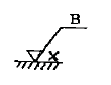
- 보링 가공
- 벨트 연삭
- 블러시 다듬질
- 브로칭 가공
(정답률: 73%)
22. 스퍼기어를 제도할 경우 스퍼기어 요목표에 일반적으로 기입하지 않는 것은?
- 피치원 지름
- 모듈
- 압력각
- 기어의 치폭
(정답률: 70%)
23. 치수가
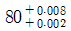
로 나타날 경우 위치수 허용치는?(오류 신고가 접수된 문제입니다. 반드시 정답과 해설을 확인하시기 바랍니다.)- 0.008
- 0.002
- 0.010
- 0.006
(정답률: 61%)
24. 그림과 같은 입체도에서 화살표 방향이 정면일 때 정투상법으로 나타낸 투상도 중 잘못된 도면은?
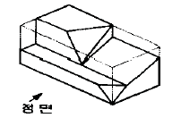
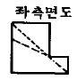
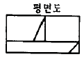
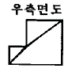
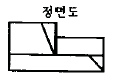
(정답률: 77%)
25. 개스킷, 박판, 형강 등과 같이 절단면이 얇은 경우 이를 나타내는 방법으로 옳은 것은?
- 실제 치수의 관계없이 1개의 가는 1점 쇄선으로 나타낸다.
- 실제 치수의 관계없이 1개의 극히 굵은 실선으로 나타낸다.
- 실제 치수의 관계없이 1개의 굵은 1점 쇄선으로 나타낸다.
- 실제 치수의 관계없이 1개의 극히 굵은 2점 쇄선으로 나타낸다.
(정답률: 61%)
26. 끼워 맞춤에서 H7/r6은 어떤 끼워 맞춤인가?
- 구멍기준식 중간 끼워 맞춤
- 구멍기준식 억지 끼워 맞춤
- 구멍기준식 헐거운 끼워 맞춤
- 구멍기준식 고정 끼워 맞춤
(정답률: 68%)
27. 도면의 양식에서 다음 중 반드시 표시하지 않아도 되는 항목은?
- 표제란
- 그림영역을 한정하는 윤곽선
- 비교 눈금
- 중심 마크
(정답률: 72%)
28. KS 재료 기호가 “SF 340 A” 인 것은
- 기계구조용 주강
- 일반구조용 압연 강재
- 탄소강 단강품
- 기계구조용 탄소 강판
(정답률: 60%)
29. 기계제도에서 치수선을 나타내는 방법에 해당하지 않는 것은?
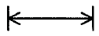
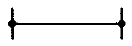
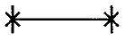
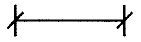
(정답률: 77%)
30. 치수 보조기호 중 구(sphere)의 지름 기호는?
- R
- SR
- ø
- Sø
(정답률: 76%)
31. 다음 중 SI 단위계의 물리량과 기본단위가 올바르게 된 것은?
- 전류 - T
- 길이 - V
- 시간 - s
- 질량 – m
(정답률: 80%)
32. 힘의 성질을 나타낸 것 중에서 잘못 설명한 것은?
- 힘은 방향, 크기, 작용점으로 결정되고 화살표로 표현한다.
- 탄성을 가지는 물체의 변형은 힘에 반비례한다.
- 동일 크기 외력에 대해 물체의 질량이 크면 속도가 서서히 변화하고, 작으면 빨리 변화한다.
- 힘은 물체의 가속도를 발생시키거나 물체를 변형시킨다.
(정답률: 73%)
33. 다음 가속도를 바르게 표현한 것은?
- 가속도 = 속도의 변화 / 시간
- 가속도 = 거리 / 시간
- 가속도 = 속도 / 거리
- 가속도 = 각도의 변화 / 시간
(정답률: 71%)
34. 다음 그림과 같이 양손의 힘을 다르게 하면서 다이스 지지쇠를 회전시킬 때 발생하는 토크는 얼마인가?
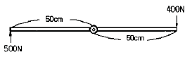
- 400 N·m
- 450 N·m
- 500 N·m
- 55 N·m
(정답률: 75%)
35. 지름 10mm의 강봉에 최대 500kgf의 하중을 매달았을 때의 안전율은? (단, 강의 극한 강도는 3000kgf/cm2이며, 자중은 무시한다.)
- 3.93
- 4.71
- 0.78
- 6.36
(정답률: 51%)
36. 도형의 면적 및 체적 계산식으로 틀린 것은? (단, 반지름 r, 호의 길이 ℓ, 높이 h 이다.)
- 부채꼴의 면적 :
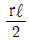
- 원기둥의 체적 : πr2h
- 원뿔의 체적 :
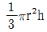
- 구의 체적 :
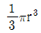
(정답률: 66%)
37. 동일한 규격의 전지 2개를 병렬로 연결하면 전압과 사용 시간은?
- 전압과 사용시간이 2배가 된다.
- 전압과 사용시간이 1/2로 된다.
- 전압은 2배가 되고, 사용시간은 변하지 않는다.
- 전압은 변하지 않고, 사용시간은 2배가 된다.
(정답률: 79%)
38. 1kWh의 일량을 바르게 표현한 것은?
- 1kWh의 동력을 30분 사용했을 때의 일량
- 1kWh의 동력을 1시간 사용했을 때의 일량
- 1kWh의 동력을 2시간 사용했을 때의 일량
- 1kWh의 동력을 3시간 사용했을 때의 일량
(정답률: 89%)
39. 그림과 같은 회로에서 R1=1Ω, R2=4Ω, R3=1Ω, R4=4Ω의 저항이 존재할 때, a와 b 사이의 합성 저항 R[Ω]은 얼마인가?
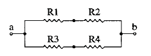
- 5/2
- 5
- 1/5
- 2/5
(정답률: 76%)
40. 그림과 같이 두 피스톤의 지름이 (P1) 32cm, (P2) 12cm 일 때, 큰 피스톤(P1)을 1cm 움직이면 작은 피스톤(P2)이 움직인 거리(cm)는 얼마인가?
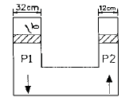
- 9.11
- 8.11
- 7.11
- 6.11
(정답률: 62%)
3과목: 자동제어
41. 선형 제어계의 안정도를 결정하는 방법이 아닌 것은?
- 나이퀴스트(nyquist) 판별법
- 근 궤적도
- 보드(bode)선도
- 과도응답 판별법
(정답률: 51%)
42. 시퀀스제어 회로에서 스위치를 ON 조작하는 것과 동시에 작동하고 타이머의 설정시간 후에 정지하는 회로는?
- 일정시간 동작회로
- 지연동작회로
- 반복동작회로
- 지연복귀동작회로
(정답률: 79%)
43. 순차 제어시스템과 되먹임 제어시스템의 차이점은?
- 조절부
- 조작부
- 출력부
- 비교부
(정답률: 82%)
44. 다음 설명에 합당한 제어기 명칭은?
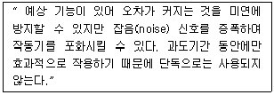
- 미분제어기
- 비례-적분제어기
- 적분제어기
- 비례제어기
(정답률: 53%)
45. 서보기구에 대한 설명으로 틀린 것은?
- 제어량이 위치, 자세 등의 기계적인 변위의 자동제어계를 서보기구라 한다.
- 출력부를 입력신호에 추종시키기 위해서 일반적으로 힘, 토크를 증폭하는 증폭부를 가지고 있다.
- 출력 5~10[kW]정도 이하에서는 유압식이, 그 이상에서는 전기식이 유리하다.
- 원격 조작 장치로서의 기능과, 증력기구로서의 기능이 있다.
(정답률: 81%)
46. 한국산업표존(KS)의 유압·공기압 표시기호에서 보조기기 기호 중 일반 유량계의 표시로 맞는 것은?
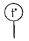
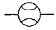
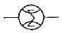
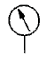
(정답률: 66%)
47. 다음 중 피드백 제어계의 특징이 아닌 것은?
- 구조가 간단하다.
- 대역폭이 증가한다.
- 비선형성과 왜형에 대한 효과가 감소한다.
- 정확성이 증가한다.
(정답률: 79%)
48. 공압회로에 부착된 압력게이지가 7 kgf/cm2을 나타냈다. 이 압력은 어떤 압력인가?
- 게이지 압력
- 절대 압력
- 표준 대기압
- 상대 압력
(정답률: 81%)
49. 다음 중 감쇠비 δ=0.2 이고, 고유 각주파수 ωn=1[rad/s]인 2차 지연요소의 전달함수는 무엇인가?
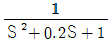
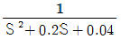
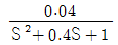
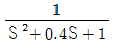
(정답률: 59%)
50.
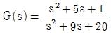
으로 표시되는 계통에 있어서의 특성근은 얼마인가?- 4, 5
- 2, 3
- -4, -5
- 2, -3
(정답률: 64%)
51. 블록 선도에서 옳지 않은 식은?
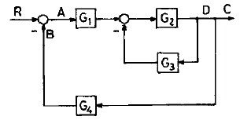
- B = C · G4
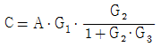
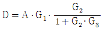
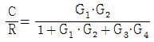
(정답률: 52%)
52. 시정수의 값은 1차 시스템에서 입력 스텝 함수에 대한 출력 변화가 전체 변화량의 약 몇 [%]에 이를 때까지의 시간인가?
- 26
- 30
- 63
- 70
(정답률: 70%)
53. 되먹임 제어계의 안정도와 가장 관련이 깊은 것은?
- 효율
- 이득여유
- 역율
- 시정수
(정답률: 66%)
54. 다음 PLC 프로그램에 대한 회로로 가장 적합한 것은?
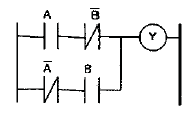
- 일치 회로
- Ex – OR 회로
- OR 회로
- AND 회로
(정답률: 77%)
55. 다음 중 PLC의 특징이 아닌 것은?
- 비밀 유지가 쉽다.
- 안전성, 신뢰성을 높일 수 있다.
- 제어반 설치면적이 크다.
- 설비의 변경, 확장이 용이하다.
(정답률: 79%)
56. 공압장치의 구성기기와 관계없는 것은?
- 애프터 쿨러
- 어큐뮬레이터
- 서비스 유닛
- 공기탱크
(정답률: 78%)
57. 어떤 제어계에 대하여 단위 1인 크기의 계단입력에 대한 응답을 무엇이라 하는가?
- 과도응답
- 선형응답
- 정상응답
- 인디셜응답
(정답률: 67%)
58. 다음 중 서보제어에 속하지 않는 제어량은?
- 속도
- 방위
- 위치
- 자세
(정답률: 68%)
59. PLC에서 제어 내용을 기억해 두는 메모리로 필요에 따라 기억내용을 소멸 또는 기억시키는 것으로 맞는 것은?
- 제어용 메모리
- 프로그램 메모리
- 입출력 메모리
- 연산제어부
(정답률: 71%)
60. 다음 공압 밸브 기호의 명칭은?
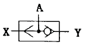
- 릴리프 밸브
- OR 밸브
- AND 밸브
- 감압 밸브
(정답률: 65%)
4과목: 메카트로닉스
61. 다음 중 측정량에 따른 분류에서 물리센서의 감지 대상에 속하지 않는 것은?
- 온도
- 자기
- 전류
- 길이
(정답률: 66%)
62. 디지털 시스템에서 음수의 표현 방법이 아닌 것은?
- 3초과 코드에 의한 표현
- 1의 보수에 의한 표현
- 2의 보수에 의한 표현
- 부호와 절대 값에 의한 표현
(정답률: 76%)
63. 스테핑 모터에 부여하는 펄스 주파수에 비례하는 것은?
- 회전각도
- 회전속도
- 위치결정
- 토크
(정답률: 58%)
64. 서보모터에 대한 설명 중 틀린 것은?
- 서보 기구용으로 설계된 모터이다.
- 동작의 급변에 정확히 추종하기 위해 설계된 모터이다.
- 기구의 추종 운동을 전자에너지, 센서 정보로 변환하는 모터이다.
- 민첩성이 뛰어나야 한다.
(정답률: 62%)
65. 자장의 세기에 대한 단위 중 올바르게 나타낸 것은?
- A/m
- AT/m
- AV/m
- A·Ω/m
(정답률: 67%)
66. 다음 중 가장 정밀한 가공 표면을 얻을 수 있는 가공방법은 어느 것인가?
- 선반가공
- 연삭가공
- 드릴가공
- 줄가공
(정답률: 66%)
67. 다음 회로에서 논리식은?
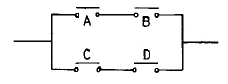
- A + B
- C + D
- AB + CD
- AC + BD
(정답률: 88%)
68. 위치를 검출할 때 사용하는 감지기의 종류는?
- CdS
- 농도센서
- 압력센서
- 엔코더
(정답률: 65%)
69. 밀링작업에서 하향절삭 작업과 비교한 상향절삭 작업의 특징을 설명한 것 중 틀린 것은?
- 침이 날을 방해하지 않는다.
- 커터의 수명이 짧다.
- 백래시 제거장치가 필요하다.
- 가공 면이 깨끗하지 못하다.
(정답률: 74%)
70. 다음 센서 중 회전수(RPM)을 측정할 수 없는 것은?
- 차동트랜스
- 인코더
- 타코미터
- 리졸버
(정답률: 52%)
71. 다음 중 특수가공에 해당하는 것은?
- 밀링 가공
- 방전 가공
- 연삭 가공
- 선반 가공
(정답률: 88%)
72. 밀링 공정에서 테이블의 이송거리가 100mm, 이송속도를 100mm/min로 하면 절삭시간은 몇 초(sec)인가?
- 1
- 10
- 30
- 60
(정답률: 66%)
73. 마이크로프로세서 내에서 산술연산의 기본연산은?
- 덧셈
- 뺄셈
- 곱셈
- 나눗셈
(정답률: 87%)
74. 동일 조건에서 코일의 권수만을 10배 증가하였을 때 인덕턴스의 값은?
- 7배 증가
- 10배 증가
- 50배 증가
- 100배 증가
(정답률: 64%)
75. 공기 중에서 자속 밀도 5Wb/m2의 평등 자장 속에, 길이 10cm의 직선 도선을 자장의 방향과 직각으로 놓고 여기에 4A의 전류를 흐르게 하면 도선이 받는 힘(N)은?
- 1
- 2
- 3
- 4
(정답률: 65%)
76. 이상적인 연산증폭기의 입력 임피던스의 값으로 맞는 것은?
- 0
- ∞
- 100
- 1M
(정답률: 80%)
77. 서미스터를 통해 들어오는 온도 측정값을 마이크로컴퓨터의 메모리에 저장하기 위해 필요한 인터페이스 장치로 맞는 것은?
- D-A 변환기
- A-D 변환기
- AC-DC 변환기
- DC-AC 변환기
(정답률: 78%)
78. 컴퓨터 내부에서 연산의 중간 결과를 임시적으로 기억하거나, 데이터의 내용을 이송할 목적으로 사용되는 일시 기억장치는?
- ROM
- RAM
- I/O
- REGISTER
(정답률: 57%)
79. 다음 제어기 중 성격이 다른 하나는?
- 컴퓨터 기반 제어
- 서보모터 기반 제어
- PLC 기반 제어
- 마이크로프로세서 기반 제어
(정답률: 66%)
80. 패리티(parity) 비트의 목적으로 맞는 것은?
- 속도 검출
- 속도 가변
- 에러 검사
- 부호 변환
(정답률: 78%)